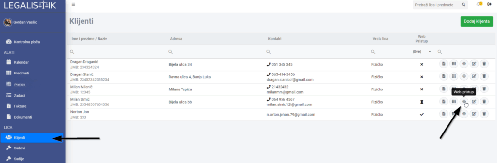

Da bi smanjili nepotrebno gubljenje vremena na komunikaciju i izvještavanje klijenta o statusu predmeta, postoji mogućnost aktivacije online pristupa za klijente. Klijeti bi imali pristup samo osnovnim podacima o predmetu i njegovim statusima.
Da bi omogućili pristup klijentu potrebno je kliknuti na ikonu “Web pristup” pored željenog klijenta (klijent mora ):

Klijentu će stići email sa svim potrebnim podacima za registraciju i pristup njegovim predmetima:

Pogledajte i kratko video uputstvo: